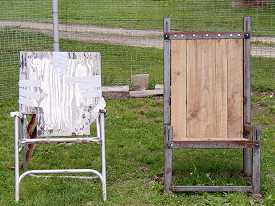
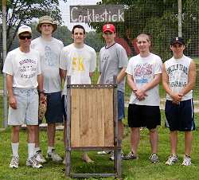
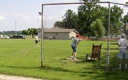
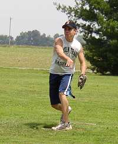
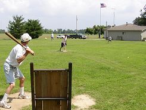

Out with the old, in with the new. The old chair baseball chair was retired
on Sunday to make room for the new custom-built edition. |

Pictured from left to right: Tony, Chris, Patrick Cork, Cory Williamson,
Josh Williamson, and Jake Hoalt pose with the new chair before the game. |
Jake Hoalt fires the first pitch toward the new Chair Baseball chair. Hoalt
suffered his second loss of the year allowing 5 runs in 9 innings. |

Cory Williamson prepares for a Jake Hoalt pitch in
Sunday's game. Williamson sparked the 8th inning
rally that helped lead his team to victory. |

Jake Hoalt fires a pitch in
Sunday's wind-blown
game. Hoalt was brilliant through 7 innings,
but gave up a pair of late homers in the defeat. |
Patrick Cork celebrates after
his go-ahead homer
in the 8th inning. Cork's homer pushed his team
into a 3-1 lead and they held on for the 5-3 win. |

Tony Cork watches an inside
pitch as the flag
in center field shows the effect the wind played
on Sunday's game. 20 mile per hour winds blowing in from
left slowed both offenses for most of the day. |